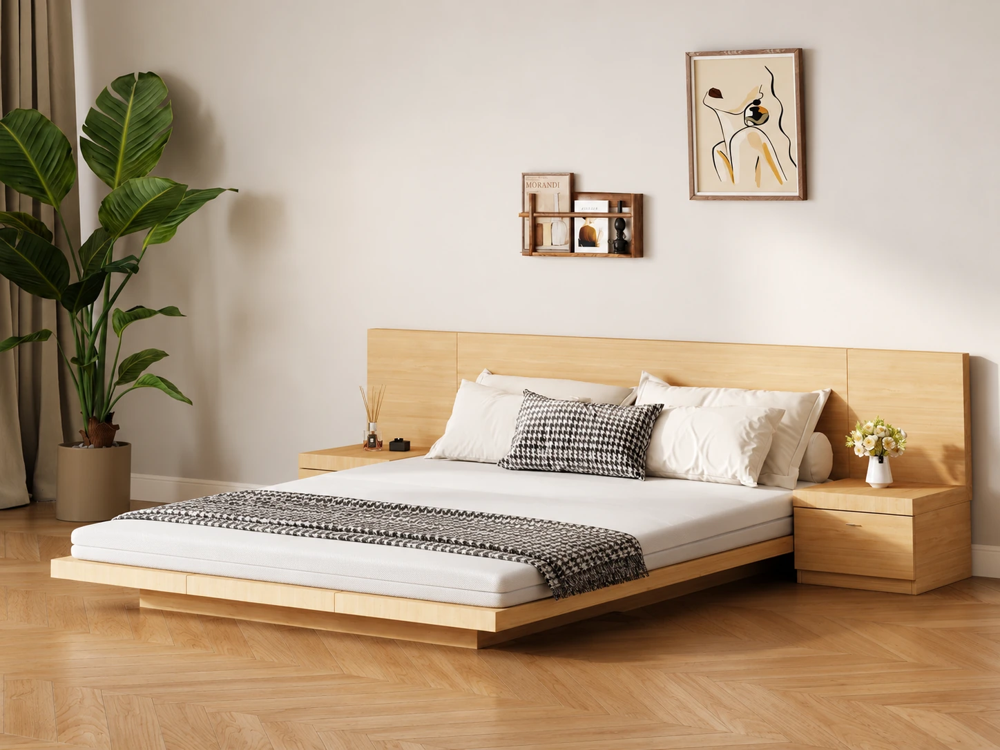

PALE PINE · SOFT TEXTURE · QUIET CONTRAST
A softer
foundation.
Twelve rugs. One considered room.
Find the right grounding for the pale pine Scandi Home Japanese queen bed. Start with the no-rug baseline, then explore every option in place.
Explore the twelveSee it in the room
Artist’s visualization — verify physical sample.

Nominal rug placement: 11 ft across the bed × 8 ft head-to-foot. Visual placement and scale are approximate.
Shown: a specified 5 cm mattress, an assumed slim topper and a fitted Eight Sleep cover. Topper thickness, cover model and compatibility are unconfirmed.
THE EDIT · TWELVE POSSIBILITIES
Texture changes everything.
Ordered by overall fit for this room.
See the room view beside the original catalogue swatch.
Loading the collection…
The collection could not be loaded. Please refresh, or open this folder through a local web server as described in the README.
SIDE BY SIDE
Make room for a shortlist.
Choose up to three rugs from the collection.
Room views, real swatches and trade-offs in one place.
Your shortlist starts with a checkbox.
Select “Compare” on any rug to bring it here.
Back to the collection ↑0 of 3 selected
READ BEFORE DECIDING
A visual starting point.
A sample makes it real.
Room, bed & bedding assumptions
The study uses the pale pine Scandi Home Japanese queen bed. A 5 cm mattress core was specified. Topper thickness and the exact Eight Sleep model are unspecified; a slim topper and fitted cover are shown qualitatively, without invented dimensions.
Combined bedding height and Eight Sleep compatibility have not been verified. Confirm both with the relevant manufacturers. The integrated side-table span and available clearance are also unknown.
Rug scale, colour & placement
Each rug is treated as nominally 8 × 11 ft, with 11 ft (335 cm) across the bed and 8 ft (244 cm) head-to-foot. These are approximate catalogue dimensions, not a measured floor plan. Photographic styling, perspective, texture and placement are approximate.
Ivory products are intentionally shown as bright ivory. Screen colour and generated room lighting cannot establish the physical colour: use the catalogue crop as a reference and verify a physical sample.
Catalogue & pricing notes
Product names, page references and prices come from the supplied 163-page October Decoliving catalogue. This is a catalogue snapshot, not a live quote. Availability is unknown; confirm the current price, exact size and stock before ordering.
Only product crops are included here. Rankings and trade-offs are independent aesthetic judgments for this room. The room images are artist’s visualizations, not installation photographs.